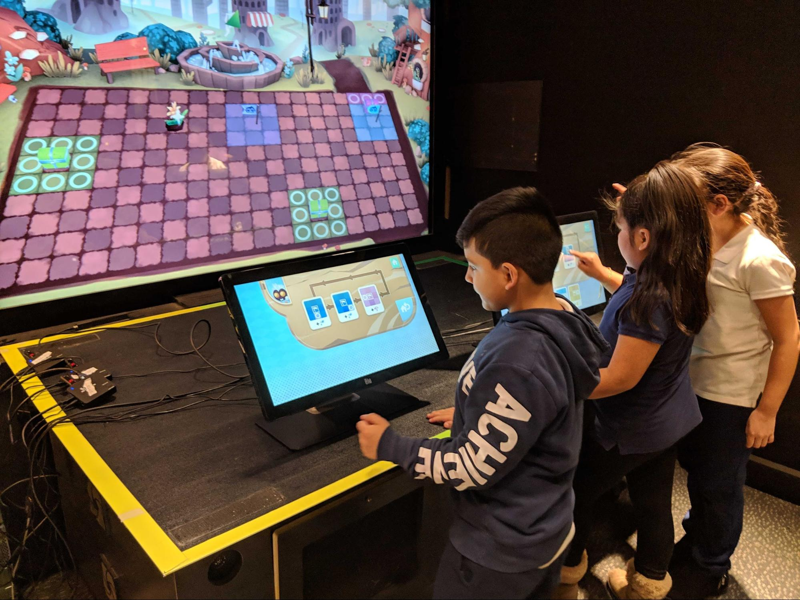
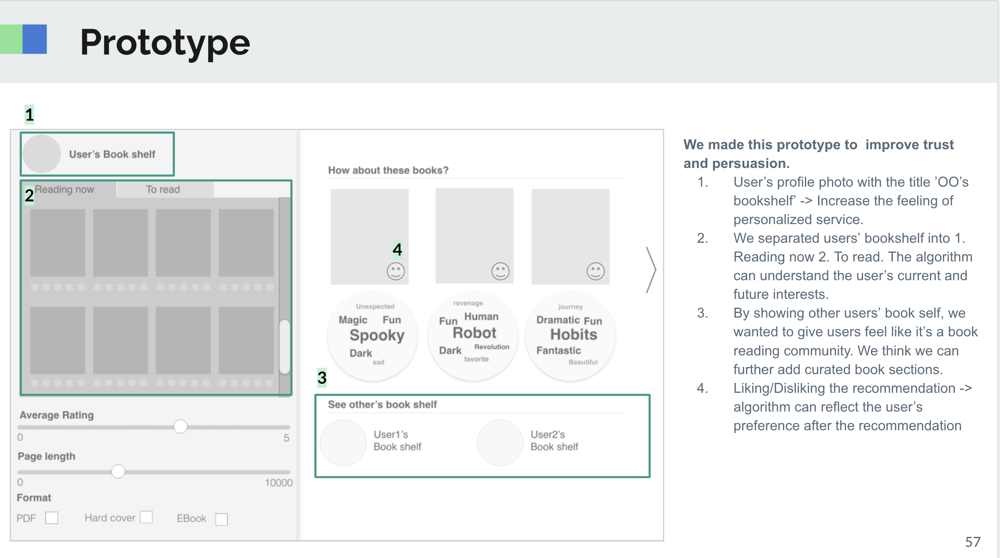

Game Research - Informal Learning Environments -
Design
Based
Research - HCI
Eda is a 92.9 percent Phd candidate at UW-Madison. She is dedicated to
facilitating collaborative learning and civic engagement through designing interactive
public spaces for people from diverse backgrounds. In her work, she uses design-based
research, storytelling, quantitative and learning analytics to build a more
inclusive and playful learning environment for people..
Women and underrepresented racial minority students are marginalized in
STEM contexts. The anxiety and burden that come with marginalization first appear in
adolescence and can contribute to long-term disengagement. In the SCIPR project, we
design transformational games for middle-school aged students who are marginalized
in STEM. The games encourage and foster curiosity, as a type of STEM skill to
increase comfort and competency in STEM spaces. This project has contributions in
game design methodology, playtesting methods for marginalized children, curiosity
and uncertainty theory, and has produced award-winning games.
To, A., Fan, A., Kildunne, C., Zhang, E., Kaufman, G., & Hammer, J. (2016,
October). Treehouse Dreams: A Game-Based Method for Eliciting Interview Data
from Children. In Proceedings of the 2016 Annual Symposium on Computer-Human
Interaction in Play Companion Extended Abstracts (pp. 307-314).
To, A., Fath, E., Zhang, E., Ali, S., Kildunne, C., Fan, A., ... & Kaufman, G.
(2016). Tandem Transformational Game Design: A Game Design Process Case Study.
In Proceedings of the International Academic Conference on Meaningful Play.
To, A., Holmes, J., Fath, E., Zhang, E., Kaufman, G., & Hammer, J. (2018).
Modeling and designing for key elements of curiosity: Risking failure, valuing
questions. Transactions of the Digital Games Research Association, 4(2).
Rainbow Agents

Science museums often reward visitors who have already engaged with the
traditional modes of science learning. However, this dynamic only pushes people from
underrepresented communities farther away from the learning opportunities. Rainbow
Agents was designed to encourage and promote computational literacy through
collaborative play and share sense-making. In our research , we bring in and focus
on perspectives from groups typically underrepresented in computer sciences to help
further understand how to better design and engage a broader group of audience in
informal learning environments.
Zhang, E., Kumar, V. (2019). Designing Collaborative Museum Games for Engaging
Computational Thinking Practices. Presented as a poster at the Learning Sciences
Graduate Student Conference (LSGSC) 2019. Northwestern University, Evanston, IL,
USA. (Poster Presentation)
Pellicone, A., Lyons, L., Kumar, V., Zhang, E., & Berland, M. (2019, October).
Rainbow Agents: A Collaborative Game For Computational Literacy. In Extended
Abstracts of the Annual Symposium on Computer-Human Interaction in Play
Companion Extended Abstracts (pp. 597-604).
Storytelling Game in Language
Learning
Storytelling has been underrated. Storytelling can be a method, a skill,
and can also be art. In this project, we investigate the design and use of a
storytelling board game to encourage language learning and self-expression.
Zhang, E., Culbertson, G., Shen, S., & Jung, M. (2018, April). Utilizing
narrative grounding to design storytelling games for creative foreign language
production. In Proceedings of the 2018 CHI Conference on Human Factors in
Computing Systems (pp. 1-11).
CS Education
Selvaraj, A., Zhang, E., Porter, L., & Soosai Raj, A. G. (2021, June). Live
Coding: A Review of Literature. In Proceedings of the 26th ACM Conference on
Innovation and Technology in Computer Science Education V. 1 (pp. 164-170)..
Raj, A. G. S., Gu, P., Zhang, E., Williams, J., Halverson, R., & Patel, J. M.
(2020, February). Live-coding vs Static Code Examples: Which is better with
respect to Student Learning and Cognitive Load?. In Proceedings of the
Twenty-Second Australasian Computing Education Conference (pp. 152-159).
Soosai Raj, A. G., Zhang, E., Mukherjee, S., Williams, J., Halverson, R., &
Patel, J. M. (2019, July). Effect of native language on student learning and
classroom interaction in an operating systems course. In Proceedings of the 2019
ACM Conference on Innovation and Technology in Computer Science Education (pp.
499-505).
Raj, A. G. S., Zhang, H., Abhyankar, V., Mukerjee, S., Zhang, E., Williams, J.,
... & Patel, J. M. (2019, November). Impact of bilingual cs education on student
learning and engagement in a data structures course. In Proceedings of the 19th
Koli Calling International Conference on Computing Education Research (pp.
1-10).
Makerspace in Museums
Analyzing How Maker Activities Engage Learners Differently (AERA) | Paper
Investigated variations in learner engagement. We considered engagement through
the lens of the seeking and sharing resources measurement tool. with Prof. Peter
Wardrip (UW Madison); Dr. Annie White (Fred Rogers Center); Katie Todd (CMP);
Alison Bank (CMP)
Exploring Different Facilitator Roles in Maker-based Learning (ICLS) | Poster
Explored and investigated the contexts and environments in which kids seek to
learn more about materials, tools as well as the process of making. with Prof.
Peter Wardrip (UW Madison); Dr. Annie White (Fred Rogers Center); Alison Bank
(CMP)
Public Interactive Data
Visualization
Data visualization can benefit people in learning and performing complex
tasks. Furthermore, participating in the co-creation of data
representations/visualizations gives people a sense of agency and ownership of the
data. This project studies a co-creation of tangible data representation in a
children’s museum. We investigate how data representations may benefit multiple
stakeholders in a children’s museum.
Book Recommender

TODO: add r app url
Coversational AI
This project is to develop a conversational AI chatbot that encourages
and assists English language learners to make conversations and. Based on Vygotsky's
theory of ZDP, the conversational AI is designed to be a “more capable other” to
accompany and encourage learners to make conversations and better express
themselves.
Lead AI Learning Lab in researching and developing intelligent tutors for the
company. Supervised by Dr. Donghai Xia (Microsoft)
Design of Space
Humans always reside in a certain space. Environment brings about
affordances and constraints. The design of the environments gives rise to different
interactions, thus diverse dynamics and energy. In this project, I start from a
perspective of a built environment to explore the interaction and relationship
between humans and a space that they were surrounded by.
TODO - add sketchup